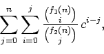

Research
My research lies mainly in the area of probability theory.
Probabilistic models are important because the future is uncertain, so it often makes sense to use random models that reflect this unpredictability.
Current research topics of interest include Markov chains, diffusions, occupation times of stochastic processes, urn models, combinatorial identities, and some special functions.
I have also done statistical analyses involving structural equation modeling (SEM).
List of publications
-
Occupation times on the legs of a diffusion spider (2025), with P. Salminen.
Entropy 27(2): 179.
[Abstract]
We study the joint moments of occupation times on the legs of a diffusion spider. Specifically, we give a recursive formula for the Laplace transform of the joint moments, which extends earlier results for a one-dimensional diffusion. For a Bessel spider, of which the Brownian spider is a special case, our approach yields an explicit formula for the joint moments of the occupation times.
-
Do patients’ psychosocial characteristics impact antibiotic prescription rates? (2023), with S. Stenlund, L. Mâsse, L. Sillanmäki, K. C. Appelt, H. Koivumaa-Honkanen, P. Rautava, S. Suominen, and D. M. Patrick. Antibiotics 12(6), 1022.
[Abstract]
Previous research suggests that the characteristics of both patients and physicians can contribute to the overuse of antibiotics. Until now, patients’ psychosocial characteristics have not been widely explored as a potential contributor to the overuse of antibiotics. In this study, the relationship between a patient’s psychosocial characteristics (self-reported in postal surveys in 2003) and the number of antibiotics they were prescribed (recorded in Finnish national registry data between 2004–2006) were analyzed for 19,300 working-aged Finns. Psychosocial characteristics included life satisfaction, a sense of coherence, perceived stress, hostility, and optimism. In a structural equation model, patients’ adverse psychosocial characteristics were not related to increased antibiotic prescriptions in the subsequent three years. However, these characteristics were strongly associated with poor general health status, which in turn was associated with an increased number of subsequent antibiotic prescriptions. Furthermore, mediation analysis showed that individuals who used healthcare services more frequently also received more antibiotic prescriptions. The current study does not support the view that patients’ adverse psychosocial characteristics are related to an increased number of antibiotic prescriptions. This could encourage physicians to actively discuss treatment options with their patients.
-
On the connection between Stirling numbers and Bessel numbers (2022).
Electronic Journal of Combinatorics 29(1), P1.40.
[Abstract]
We present new proofs for some summation identities involving Stirling numbers of both first and second kind. The two main identities show a connection between Stirling numbers and Bessel numbers. Our method is based on solving a particular recurrence relation in two different ways and comparing the coefficients in the re- sulting polynomial expressions. We also briefly discuss a probabilistic setting where this recurrence relation occurs.
-
Longitudinal stability and interrelations between health behavior and subjective well-being in a follow-up of nine years (2021),
with S. Stenlund, N. Junttila, H. Koivumaa-Honkanen, L. Sillanmäki, S. Suominen, H. Lagström, and P. Rautava.
PLoS ONE 16(10), e0259280.
[Abstract]
Background
The bidirectional relationship between health behavior and subjective well-being has previously been studied sparsely, and mainly for individual health behaviors and regression models. In the present study, we deepen this knowledge focusing on the four principal health behaviors and using structural equation modeling with selected covariates.Methods
The follow-up data (n = 11,804) was derived from a population-based random sample of working-age Finns from two waves (2003 and 2012) of the Health and Social Support (HeSSup) postal survey. Structural equation modeling was used to study the cross-sectional, cross-lagged, and longitudinal relationships between the four principal health behaviors and subjective well-being at baseline and after the nine-year follow-up adjusted for age, gender, education, and self-reported diseases. The included health behaviors were physical activity, dietary habits, alcohol consumption, and smoking status. Subjective well-being was measured through four items comprising happiness, interest, and ease in life, and perceived loneliness.Results
Bidirectionally, only health behavior in 2003 predicted subjective well-being in 2012, whereas subjective well-being in 2003 did not predict health behavior in 2012. In addition, the cross-sectional interactions in 2003 and in 2012 between health behavior and subjective well-being were statistically significant. The baseline levels predicted their respective follow-up levels, the effect being stronger in health behavior than in subjective well-being.Conclusion
The four principal health behaviors together predict subsequent subjective well-being after an extensive follow-up. Although not particularly strong, the results could still be used for motivation for health behavior change, because of the beneficial effects of health behavior on subjective well-being. -
On occupation times of one-dimensional diffusions (2021), with P. Salminen.
Journal of Theoretical Probability 34, 975–1011.
[Abstract]
In this paper, we study the moment generating function and the moments of occupation time functionals of one-dimensional diffusions. Assuming, specifically, that the process lives on ℝ and starts at 0, we apply Kac’s moment formula and the strong Markov property to derive an expression for the moment generating function in terms of the Green kernel of the underlying diffusion. Moreover, the approach allows us to derive a recursive equation for the Laplace transforms of the moments of the occupation time on ℝ+. If the diffusion has a scaling property, the recursive equation simplifies to an equation for the moments of the occupation time up to time 1. As examples of diffusions with scaling property, we study in detail skew two-sided Bessel processes and, as a special case, skew Brownian motion. It is seen that for these processes our approach leads to simple explicit formulas. The recursive equation for a sticky Brownian motion is also discussed.
-
Some double sums involving ratios of binomial coefficients arising from urn models (2019), with J. G. Wan.
Journal of Integer Sequences 22, Article 19.1.8.
[Abstract]
In this paper we discuss a class of double sums involving ratios of binomial coefficients. The sums are of the form
 where f1, f2 are functions of n. Such sums appear in the analyses of the Mabinogion urn and the Ehrenfest urn in probability. Using hypergeometric functions, we are able to simplify these sums, and in some cases express them in terms of the harmonic numbers. -
On the Mabinogion urn model (2018).
Advances in Applied Probability 50, 327–346.
[Abstract]
In this paper we discuss the Mabinogion urn model introduced by Williams (1991). Therein he describes an optimal control problem where the objective is to maximize the expected final number of objects of one kind in the Mabinogion urn model. Our main contribution is formulae for the expected time to absorption and its asymptotic behaviour in the optimally controlled process. We also present results for the noncontrolled Mabinogion urn process and briefly analyze other strategies that become superior if a certain discount factor is included.
Doctoral Thesis
-
Hitting times in urn models and occupation times in one-dimensional diffusion models (2020).
Åbo Akademi University.
[Abstract]
The main subject of this thesis is certain functionals of Markov processes. The thesis can be said to consist of three parts. The first part concerns hitting times in urn models, which are Markov processes in discrete time. In particular, the expected time to absorption in the Mabinogion model is studied. For instance, we give formulas for the expected time to absorption as a function of the initial state of the process, both in the ordinary Mabinogion model and under a strategy that solves an optimal control problem. The second part of the thesis is about occupation times of one-dimensional diffusions, which are continuous Markov processes. We give a recursive formula for the moments of the occupation time on the positive real line, in the case that the diffusion has a self-similar property, or for the Laplace transform of the moments, in case of a general diffusion. The recurrence is based on the Green kernel of the diffusion. In the third part of the thesis, we give results on some combinatorial summation identities that are connected to the other presented results. These include double sums with ratios of binomial coefficients, as well as sums involving Stirling numbers of both first and second kind.